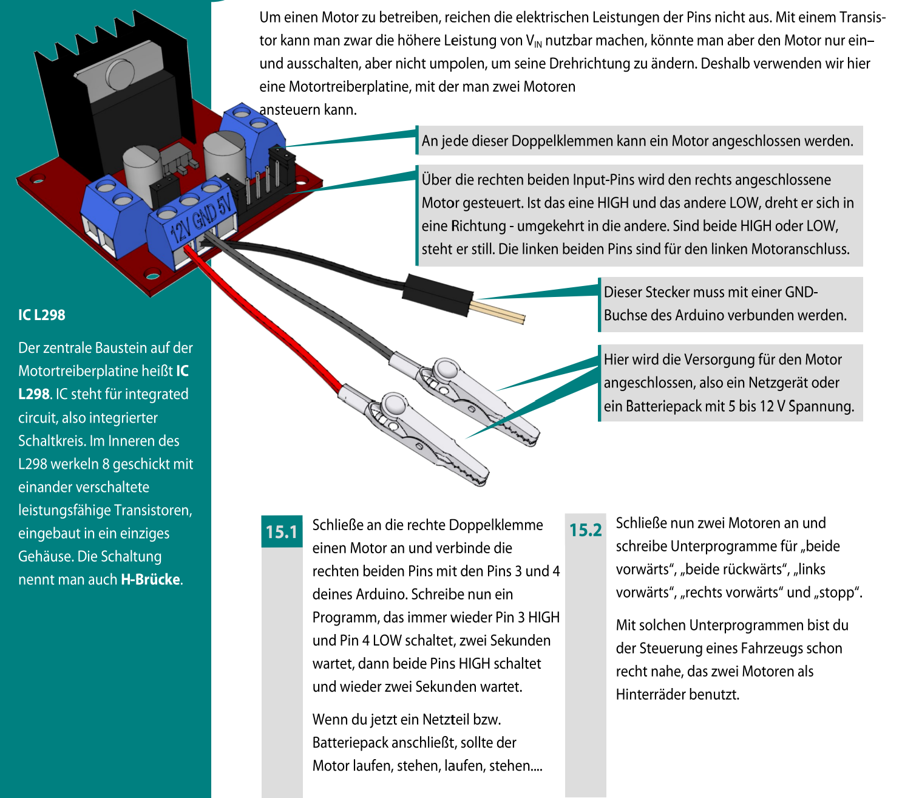
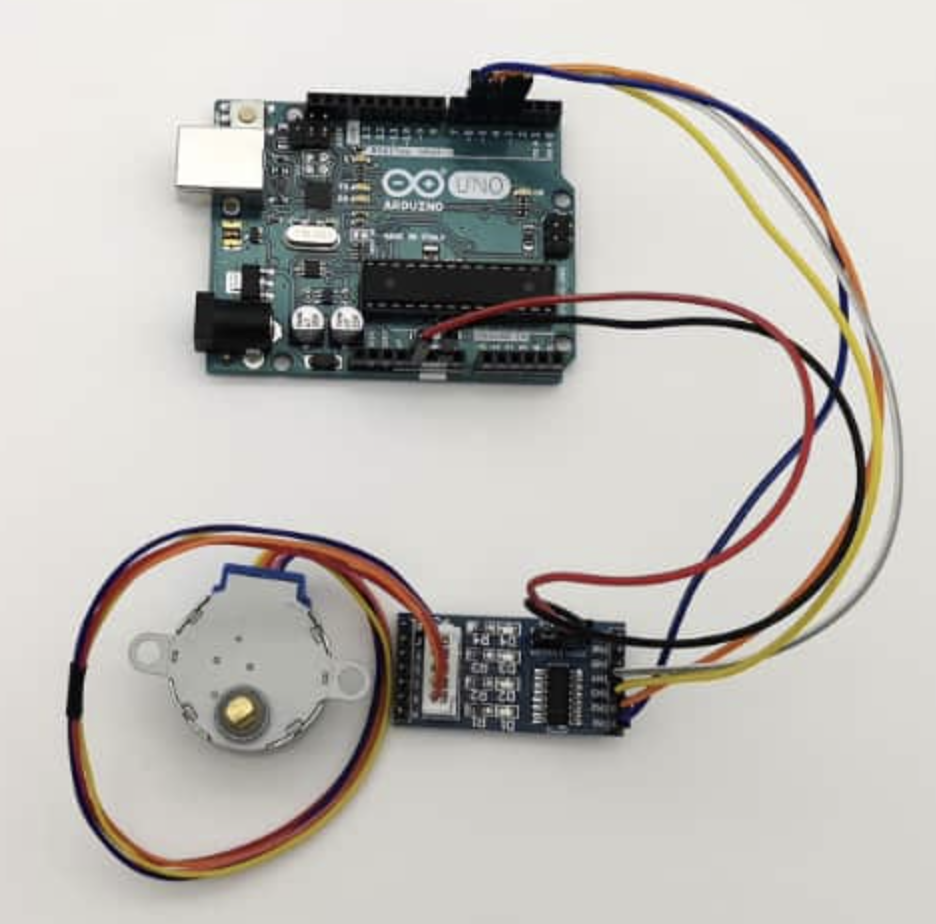
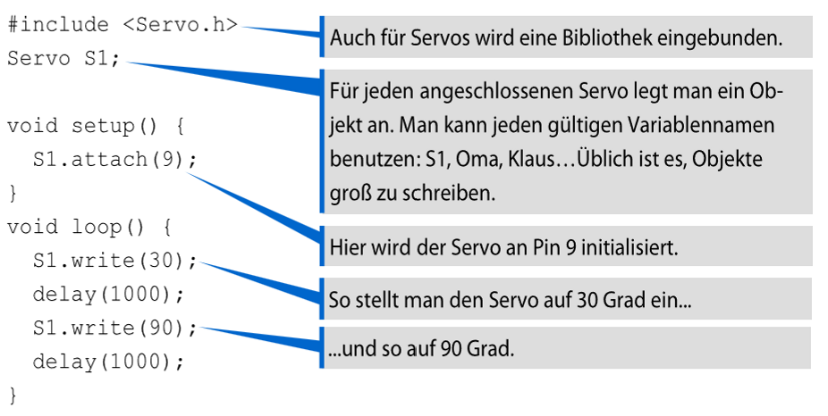
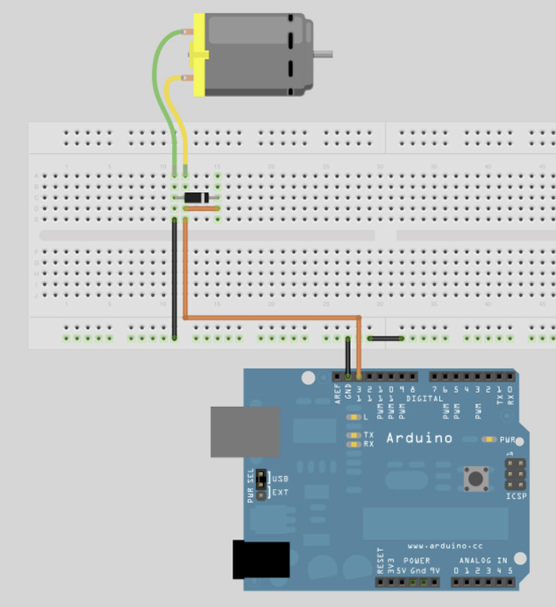
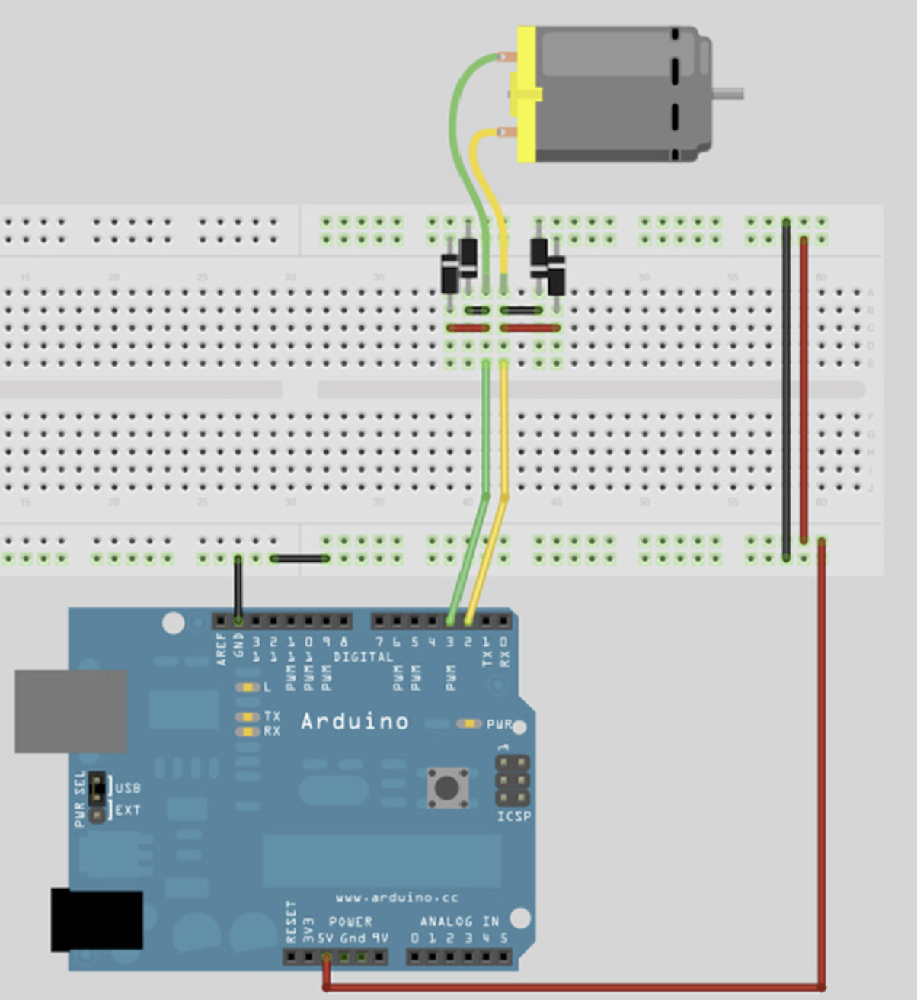
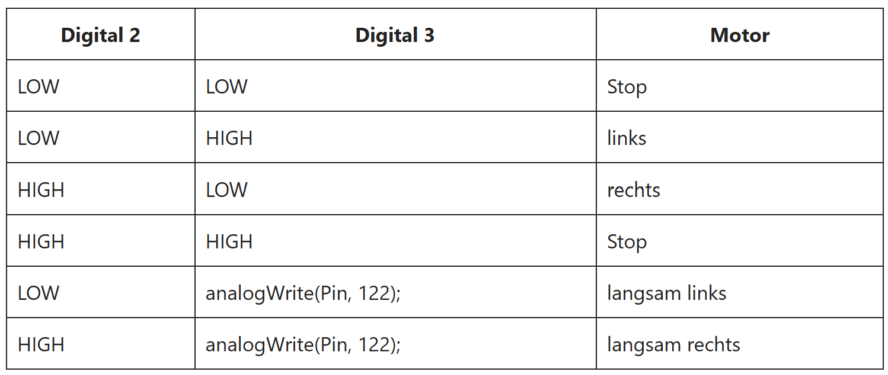

digitalWrite(MOTOR, HIGH); // Motor an
digitalWrite(MOTOR, LOW); // Motor ausanalogWrite(MOTOR, 120);if, analogWrite() und eine Variable für die Geschwindigkeit.
if abfragen.Wenn du einen DC-Motor sauber und belastbar steuern willst, reicht ein einzelner Ausgang nicht mehr. Dafür nutzt du ein DC-Motorsteuerungsmodul auf Basis des L298N-Chips.
Das Gleichstrommotor-Treibermodul in diesem Projekt basiert auf dem IC L298N. Im Inneren arbeitet eine H-Brücke, mit der sich ein Motor nicht nur ein- und ausschalten, sondern auch umpolen lässt. So kann er vorwärts und rückwärts laufen.
Damit der Treiber nicht überhitzt, ist ein großer Kühlkörper auf den Chip geschraubt. Er vergrößert die Oberfläche und gibt Wärme besser an die Umgebung ab.
Die Platine kann maximal zwei Motoren gleichzeitig betreiben.
Die Stromversorgung kommt über einen 3-poligen Schraubverbinder mit den Anschlüssen VS, GND und VSS.
VS ist die Versorgung für den Motor und darf hier bis zu 12 V betragen. VSS versorgt den Logikteil der Platine und liegt im Bereich von 5 bis 7 V. GND ist die gemeinsame Masse.

HIGH und LOW legt die Drehrichtung fest. Sind beide gleich, steht der Motor still. Die linken beiden Pins gehören zum linken Motoranschluss.HIGH und Pin 4 auf LOW schaltet, zwei Sekunden wartet, danach beide Pins auf HIGH setzt und wieder zwei Sekunden wartet.
Jetzt arbeitest du den Schrittmotor Schritt für Schritt durch. Du verbindest zuerst die Bauteile, richtest danach die IDE ein und verstehst am Ende den ersten Sketch.
Wie schaffst du es, dass sich ein Schrittmotor nicht einfach nur dreht, sondern kontrolliert und reproduzierbar reagiert?

Stecke zuerst den Motorstecker in die passende Buchse der Treiberplatine. Achte auf die Form des Steckers, damit er nicht verdreht eingesteckt wird.
Verbinde danach GND und VCC der Treiberplatine mit GND und 5V des Arduino. Die Signalleitungen IN1, IN2, IN3 und IN4 kommen an die Arduino-Pins 6, 5, 4 und 3.
Verbinde den Arduino mit dem Rechner und starte die Arduino-IDE. Unter Werkzeuge > Port wählst du den richtigen Anschluss aus.
Über Werkzeuge > Boardinformationen holen kannst du prüfen, ob die Verbindung klappt. Erst wenn Board und Port stimmen, lohnt sich das Hochladen eines Sketches.
Ein leerer Sketch enthält immer setup() und loop(). In setup() stehen Dinge, die nur einmal beim Start passieren. In loop() läuft dein Programm immer wieder.
Für den Motor nutzt du die Bibliothek Stepper.h. Sie hilft dir dabei, einzelne Schritte gezielt anzusteuern.
Ein Schrittmotor braucht nicht nur Strom, sondern eine saubere Reihenfolge von Steuersignalen. Genau deshalb sind die Treiberplatine, die Pin-Reihenfolge und die richtige Auswahl von Board und Port so wichtig.
Jetzt zerlegst du den ersten Sketch in seine Bausteine. Ziel ist nicht nur, dass der Code läuft, sondern dass du erklären kannst, warum er funktioniert.
#include <Stepper.h>
int steps = 2048;
Stepper Schrittmotor(steps, 3, 5, 4, 6);
void setup() {
Schrittmotor.setSpeed(5);
}
void loop() {
Schrittmotor.step(2048);
delay(1000);
Schrittmotor.step(-2048);
delay(1000);
}Mit #include <Stepper.h> bindest du die Bibliothek ein. Danach legst du mit steps = 2048 fest, wie viele Einzelschritte für eine volle Umdrehung nötig sind.
Die Zeile Stepper Schrittmotor(steps, 3, 5, 4, 6); baut ein Motor-Objekt. Es merkt sich die Schrittzahl und die verwendeten Pins.
In setup() wird mit setSpeed(5) die Drehgeschwindigkeit eingestellt. Dieser Wert gibt Umdrehungen pro Minute an.
In loop() dreht der Motor erst eine Umdrehung vorwärts, wartet kurz und läuft dann eine Umdrehung rückwärts. Negative Schrittzahlen bedeuten die Gegenrichtung.
Servos sind besonders praktisch, wenn du eine bestimmte Position ansteuern willst, zum Beispiel 30°, 90° oder 180°.
Ein Servo hat eine kleine eingebaute Elektronik. Sie vergleicht den gewünschten Winkel mit der aktuellen Stellung und korrigiert die Bewegung automatisch nach.
Typisch sind drei Leitungen: 5V, GND und Signal. Das Signal wird als Pulsfolge übertragen. Die Servo-Bibliothek nimmt dir dabei viel Arbeit ab.

Servo.h angesteuert.#include <Servo.h>
Servo S1;
void setup() {
S1.attach(9);
}
void loop() {
S1.write(30);
delay(1000);
S1.write(90);
delay(1000);
}Servos eignen sich dann, wenn eine genaue Position wichtiger ist als viele Einzelschritte. Du steuerst hier meist einen Winkel an, nicht eine feste Anzahl von Schritten.
Ein Gleichstrommotor dreht sich kontinuierlich. Er ist ideal für Räder, Lüfter oder Förderbänder, wenn nicht jeder Winkel exakt getroffen werden muss.
Er startet schnell, ist oft günstig und lässt sich mit PWM in der Geschwindigkeit beeinflussen. Genau deshalb wird er in vielen einfachen Robotern oder Ventilatoren verwendet.
Für die Richtung brauchst du meist einen Motortreiber oder eine H-Brücke. Für nur eine Drehrichtung reicht oft schon ein Transistor plus Freilaufdiode.
Ein DC-Motor weiß nicht von selbst, an welcher Position er gerade steht. Wenn du exakte Winkel brauchst, ist er ohne zusätzliche Sensorik die falsche Wahl.
| Motortyp | Stärke | Grenze | Typischer Einsatz |
|---|---|---|---|
| DC-Motor | Einfache Dauerrotation, gut für Geschwindigkeit | Keine genaue Positionsrückmeldung | Lüfter, Räder, Förderband |
| Servomotor | Gezielte Winkel | Begrenzter Drehbereich bei Standard-Servos | Greifer, Klappen, Lenkung |
| Schrittmotor | Genau reproduzierbare Schritte | Mehr Verkabelung und meist langsamer | Positionierung, Drehteller, Dosierung |

Das erste Beispiel zeigt den einfachsten Fall, wie ein Motor an das Arduino angeschlossen werden kann. Die Diode schützt das Arduino-Board vor Induktionsströmen.
Der Motor kann sich dabei nur in eine Richtung und mit einer Geschwindigkeit drehen. Zum Testen lässt sich der bekannte Blink-Code verwenden, weil der Ausgangspin einfach abwechselnd auf HIGH und LOW gesetzt wird.
Wichtig ist dabei der Blick auf die Schaltung: Stromversorgung, Masse und Schutzbauteil müssen sauber verbunden sein.
void setup() {
pinMode(13, OUTPUT);
}
void loop() {
digitalWrite(13, HIGH);
delay(1000);
digitalWrite(13, LOW);
delay(1000);
}Im zweiten Beispiel ist der Motor an zwei Outputs angeschlossen. Damit lässt sich der Motor in beide Richtungen drehen.
Die Geschwindigkeit lässt sich über die PWM-Kanäle regulieren. Bei dieser Schaltung sind vier Dioden nötig. In der Tabelle sind die möglichen Schaltzustände aufgeführt. LOW bedeutet GND, HIGH bedeutet 5V+.


LOW, HIGH und PWM zu Stopp, links, rechts oder langsamer Drehung führt.Der folgende Sketch zeigt einen möglichen Ablauf für diese Schaltung: erst Stopp, dann Vorwärtslauf, danach Rückwärtslauf und zum Schluss eine langsame Beschleunigung über PWM.
int motorPin1 = 2;
int motorPin2 = 3; // PWM
void setup() {
pinMode(motorPin1, OUTPUT);
pinMode(motorPin2, OUTPUT);
}
void motorStop() {
digitalWrite(motorPin1, LOW);
digitalWrite(motorPin2, LOW);
delay(500);
}
void loop() {
motorStop();
digitalWrite(motorPin1, HIGH); // Motor vor
digitalWrite(motorPin2, LOW);
delay(1000);
motorStop();
digitalWrite(motorPin1, LOW); // Motor zurück
digitalWrite(motorPin2, HIGH);
delay(1000);
motorStop();
digitalWrite(motorPin1, LOW); // Motor langsam zu schnell
for (int i = 0; i < 255; i++) {
analogWrite(motorPin2, i);
delay(20);
}
motorStop();
}Die Motorwahl hängt von der Aufgabe ab: Dauerrotation spricht oft für DC, Winkelsteuerung für Servo und genaue Schrittfolgen für Schrittmotor.
Zum Schluss sicherst du noch einmal die Kernideen und sammelst Anknüpfungspunkte für eigene Projekte.
Was würde sich ändern, wenn du einen Motor nicht nur bewegen, sondern seine echte Position messen willst? Dann brauchst du zusätzliche Sensoren oder Rückmeldungen, zum Beispiel Encoder oder Potentiometer.
Auch die Stromversorgung wird ab größeren Motoren schnell zum eigenen Thema: Spannung, Stromstärke und gemeinsame Masse müssen dann sauber geplant werden.
nwt/arduino-4.html und die Bilder nwt/pdf-bilder/stepper1.png und nwt/pdf-bilder/servo1.png.Servo und Stepper: docs.arduino.cc/programmingNutze in der Sidebar den Button Ergebnisse anzeigen. Dort kannst du deine Antworten gesammelt prüfen und als Text exportieren.